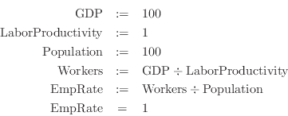
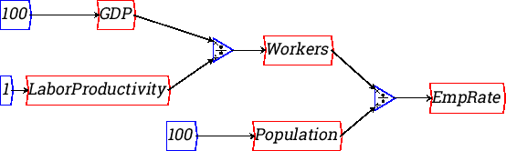

Minsky is one of a family of ``system dynamics'' computer programs. These programs allow a dynamic model to be constructed, not by writing mathematical equations or numerous lines of computer code, but by laying out a model of a system in a flowchart, which can then simulate the system. These programs are now the main tool used by engineers to design complex products, ranging from small electrical components right up to passenger jets.
Minsky adds another means to create the dynamic equations that are needed to define monetary flows--the ``Godley Table''--which is discussed in the next help topic for users who are experienced in system dynamics. In this section, we'll give you a quick overview of the generic system dynamics approach to building a model.
Though they differ in appearance, they all work the same way: variables in a set of equations are linked by wires to mathematical operators. What would otherwise be a long list of equations is converted into a flowchart, and the flowchart makes the causal chain in the equations explicit and visually obvious.
For example, say you wanted to define the rate of employment as depending on output (GDP), labor productivity and population. Then you could define a set of equations in a suitable program (like Mathcad):
Or you could define it in a flowchart, using a program like Vissim:

For a simple algebraic equation like this, modern computer algebra programs like Mathcad are just as good as a flowchart program like Vissim. But the visual metaphor excels when you want to describe a complex causal chain.
These causal chains always involve a relationship between stocks and flows. Economists normally model stocks and flows by adding an increment to a stock in equations like this for the level of Capital, where capital in year  is shown as being capital in year  plus the investment that took place that year:
For reasons that are explained in the FAQ ``Why no difference equations?, all stocks and flows in Minsky are handled instead as integral equations. The amount of capital at time is shown as the integral of net investment between time 0 and today:
However, rather than being shown as an equation, the relationship is shown as a flowchart:

The advantages of the flowchart representation of dynamic equations over a list of equations are:
For example, here's a model of a 4 cylinder engine car--one of the simple examples distributed with the program Vissim:

Programs like Vissim and Simulink have been in existence for almost 2 decades, and they are now mature products that provide everything their user-base of engineers want for modeling and analyzing complex dynamic systems. So why has Minsky been developed?